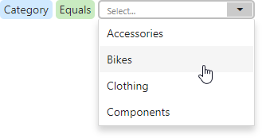

Filter Editor
The Filter Editor dialog allows you to specify filter criteria for data sources, SQL queries, and dashboard items.
Use Filter Editor
The Filter Editor displays filter criteria as a tree where individual nodes specify simple filter conditions. The root node is the logical operator that combines all the conditions. Click this node and select the desired type to change the logical operator.

Click the plus button next to the operator to add a new condition or group.
To set a new condition, specify the dimension (including hidden dimensions):
Then specify a comparison operator:
Set an operand value type in the dedicated value box:
The following operand types are available:
Value - Allows you to compare dimension and static values.

Property - Compares different dimension values.
Parameter - Allows you to compare dimension and dashboard parameter values.

Click the filter condition's Remove  button to delete the condition.
button to delete the condition.
Advanced Mode
Advanced Mode allows you to enter a custom filter string.

Consider the following syntax conventions when you create text-based filter conditions:
- Insert a dimension by enclosing its name in square brackets (for example, [Category]).
- Denote string values with apostrophes (for example, 'Bikes').
- Enclose date-time values with hashtags (for example, #2019-06-01#).
- Reference dashboard parameters by adding a question mark before their names (for example, [Category] = ?categoryParam)
This editor supports intelligent code completion (which suggests functions, parameters, and available data columns as you type).

You can add a comment to your expression to explain it and make the expression more readable. Comments can be multi-line, and begin with /* and end with */.
The Warning icon appears if a condition contains errors.
OLAP Filtering Specifics
You cannot build complex filter criteria to filter data in OLAP mode. Filters for a measure are also not supported. Instead, you can filter dimension attributes and hierarchies: you can select the values you want (or do not want) to include in the dashboard.
Dimension Attribute
For dimension attributes, the Filter Editor contains a list of all values. The search panel is available for non-hierarchical fields.

Dimension Hierarchy
The Filter Editor displays hierarchies as a tree and allows you to filter values at any hierarchy level.